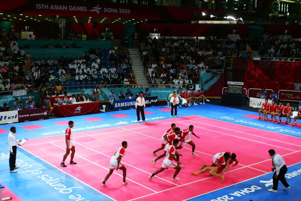
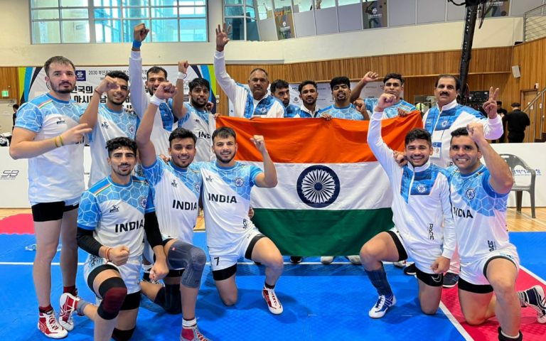

Kabaddi is a fascinating sport that requires a unique blend of physical strength, strategic thinking, and sheer tenacity. Often deemed as a sport not for the faint-hearted, it is a game that tests an individual’s endurance, agility, and ability to make quick decisions under pressure.
A typical Kabaddi match features two teams, each comprising seven players. Aspiring Kabaddi players must have the excellent lung capacity for the game demands sustained physical exertion, often in breathless sequences. Muscular strength is another essential requisite, given the sport’s intense physical contact nature. Equally critical is a sharp presence of mind to outmanoeuvre the opposing team and make split-second strategic decisions.

History of kabbadi
Embarking on a journey through the annals of Kabaddi’s history feels akin to flipping through the vibrant pages of an ancient epic. Imbued with intriguing legends, cultural traditions, and historical milestones, Kabaddi’s saga resonates deeply with the historical ethos of India.
The sport finds mention in Tukaram’s Abhang, where it is suggested that the divine Krishna himself indulged in the game, establishing Kabaddi’s connection with India’s spiritual mythology. Yet, a different thread of history ties Kabaddi’s origins to the southern lands of Tamil Nadu. The sport is believed to have emerged over 4,000 years ago, serving as a platform for showcasing courage and strength—traits sought after in a prince by princesses or potential brides.
Kabaddi’s roots dig even deeper into the soil of India’s iconic epic, the Mahabharata. The game is often linked to the valiant Abhimanyu, whose lone battle against a horde of enemy warriors mirrors the gameplay of Kabaddi—a solitary raider, much like Abhimanyu, fights off a group of defenders.
11th Asian kabbadi Champions Team India

Rules of kabaddi
- Each team shall consist of no more than 12 players with only 7 taking to the field at any one time.
- Because of the physical nature of Kabaddi, matches are categorized in age and weight categories.
- There are six officials looking after each Kabaddi match. The officials comprise of a referee, a scorer, two assistant scorers and two umpires.
- The duration of the match is two halves of 20 minutes with a half time break of 5 minutes.
- At the start of a Kabaddi match, there is a coin toss with the winner having the choice as to whether to have the first raid or not. In the second half of the match, the team that did not raid first shall begin the second half with a raid.
- To win a point when raiding, the raider must take a breath and run into the opposition’s half and tag one or more members of the opposing team and then return to their own half of the pitch before inhaling again.
- To prove that another breath hasn’t been taken, the rider must continue to repeatedly yell the word ‘Kabaddi’. Failure to do this, even for just a moment means that the rider must return to their own side of the court without points and the opposite team is awarded a point for a successful defense play.
- The team being raided is defending, and the players must prevent the raiders from tagging them and returning back over the halfway line. Whilst in defence, a team may score a point by successfully preventing the raider returning to their own half after tagging them. Raiders may only be grabbed by their limbs or torso, not by their hair, clothes or anywhere else, and defenders are not permitted to cross the centre line.
- Each team will take turns in raiding and defending. Following halftime, the two teams switch sides of the court and the team who defended first in the first half begin the second half by raiding.
- The game continues in this way until the time is up, the team with the most points at the end of the match is declared the winner.